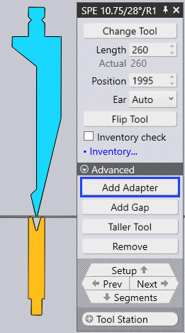
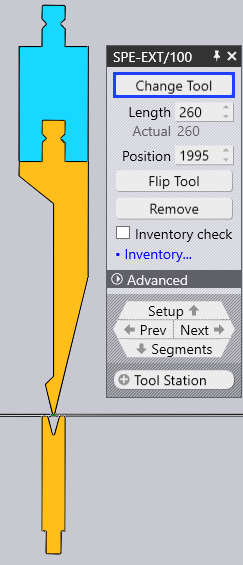
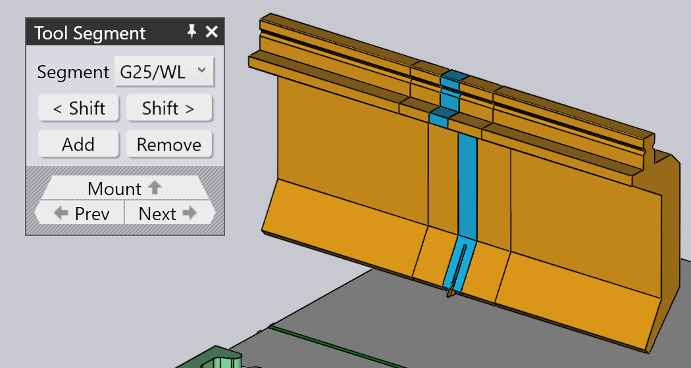
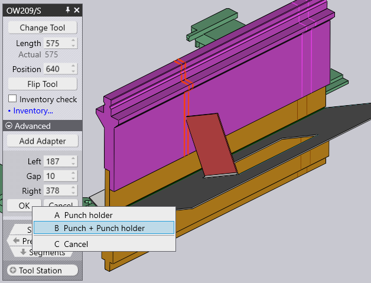
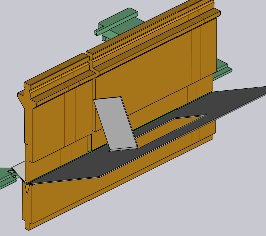
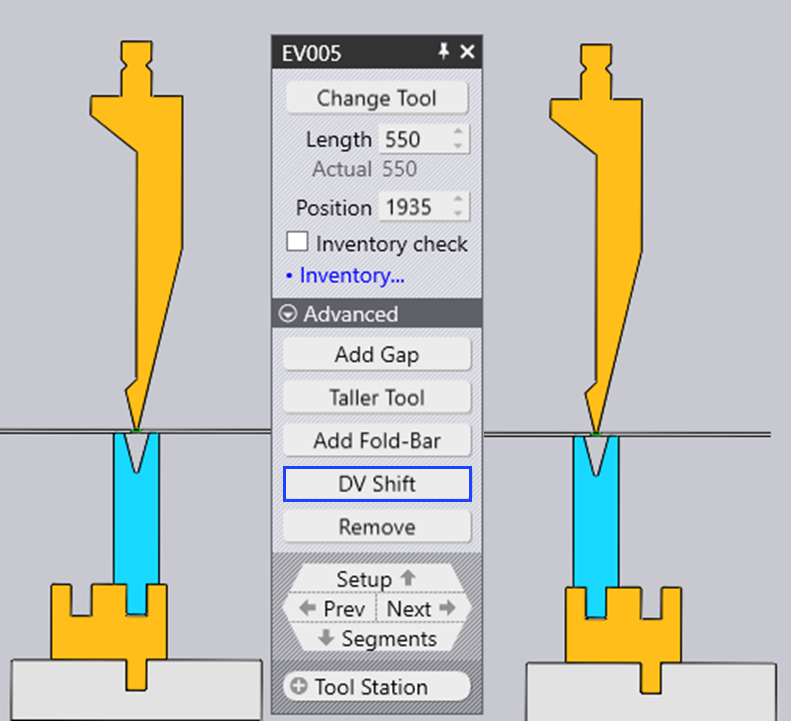

Edit a Tool Mount
When you click on a tool mount, the Bend Mount panel is displayed, and can be used to edit various settings of the bend mount, and to perform several operations.
The Bend Mount Panel
The Bend Mount panel looks like the image alongside. The exact settings and operations available will vary, depending on whether you are clicking on a punch, die or adapter mount. In addition, some settings may be available or not depending on machine capabilities.
-
Click the Change Tool button to replace the tool used for the selected mount with a different tool. (See the section below for more details on the tool selector that is used to select a replacement tool).
-
The Length input is used to adjust the length of the station. When you type in a new value here, {appName} will compose the station again using an appropriate set of segments to try and match the requested length as closely as possible. You can visually inspect the segments being used by looking at the segment boundary lines displayed on the bend mount.
-
The Position input is used to set the position of the left edge of the mount, along the machine’s table or beam. The position can also be adjusted by dragging the mount left or right. (See the section below on dragging the mount).
-
The Ear selector (displayed only for punch mounts) can be used to force {appName} to use the left and/or right ear[1] pieces in the composition).
-
The Flip Tool is used to flip the tool (front to back). It is displayed when you are editing a mount that uses an assymmetric tool (like a gooseneck tool, for example). The flip operation is intelligent enough to figure out if additional holders and tools need to be flipped to maintain consistency. For example, in the image below, flipping the OW_Z4 punch (used for Z-bending) also flips the die, the holder and even the part to maintain process consistency:
-
The Add Adapter is used to add an extender to increase the height of the punch or die. When you add an adapter, the adapter become selected and the panel for the adapter is displayed (this allows you to change the actual adapter being used, or to remove it).
 
-
The Add Gap is used to add a gap into the tool mount to allow a flange to pass through without collisions (see the section below on Adding a Gap for more details on this).
-
Taller tool is used to replace the selected tools with different taller tools from the same family.
-
Click the Remove to remove the tool mount. There will be a missing punch or missing die error displayed in the bend navigator for bends that are using this station, and this can be fixed by using the Add on the command bar on the left to add a new mount.
-
The ACB Sensor selector is used to cycle through the different ACB sensor disk pairs that can be used for this part. The selection depends on the sheet thickness, and the punch being used.
| Availability of ACB Sensor and Taller tool option in the mount panel is based on the machine type selected. |
When you edit a tool mount using any of these settings and operations, {appName} immediately validates the status of all bend operations, performing various checks like collision, tool usability etc. The bend navigator status updates immediately and in real-time, making it very easy to experiment with various settings with immediate and accurate feedback.
The Replace Tool Window
When you click on the Change Tool button, the Replace Tool window is displayed:
This window displays all the possible replacement tools.
-
Use the hierarchy on the left to narrow down the choices - for example, you could choose to display only Gooseneck tools, to make the selection easier.
-
Use the Sort selector on the top to sort the tools by name, height, radius or other sort criteria (the exact set of sort criteria depends on whether you are replacing a punch, die or adapter).
-
You can type in a tool name (or short-name) into the Search box to quickly narrow down the list. Typing in a partial tool name is fine too - using OW200 for example will match both OW200, OW200/S and OW200/K tools.
-
Use the Scale slider to adjust the sizes of the tool images. The tool that is currently used has a blue fill and a thick outline. The light-blue cross-hatch indicates other tools that are used in this part.
-
Turn off the Filter check-box to have an unrestricted view of all tools (regardless of whether they are suitable or not). In this view, the tools that are not suitable are grayed out, and moving the mouse over one of these tools indicates why it is not available for selection:
As you move the mouse over the tool images, {appName} immediately re-computes the selected tool mounts using the newly selected tool, and you can see in real-time whether the tool you are considering will cause any collision problems or not (the corresponding bends in the bend-navigator will instantly light up in red if there is a collision). This real-time preview makes it very easy for you to experiment with various tool choices until you find one that works.
If you click on one of the tools, the choice is made and the new tool is applied to the part. If you press Esc instead, the preview choices you made are reverted back and the original tool is left unchanged.
Navigation and Selection
The bend-mount panel displays various buttons in the navigation and selection sub-panels.
-
Use the Setup navigation button to move up to editing the entire bend setup. See the setup editor page for more details on this.
-
Use the Prev and Next buttons to cycle through editing the different tool mounts in this setup
-
Use the Segments navigation button to move down one level and edit the individual segments making up this mount. The section below on editing tool-mount segments provides more information on this
-
Use the Tool Station selector to select all the tool-mounts making up this station. This will select all the punches, dies and holders that are aligned with the selected mount, so they can all be edited or moved together.
-
Use the Same Tool selector to select other tool mounts that use the same tool. This is often useful before using a tool change operation; selecting all the stations using the specified tool broadens the available selection of replacement tools.[2]
Editing Multiple Mounts

If you select multiple mounts by using Shift+Click on all of them, they can be edited together. Only settings and operations that are common to all the mounts are available for editing.
Fields such as Length or Position are displayed for editing, only if they are the same for all the mounts.
If you have multiple stations, it is useful to select all the punches or all the dies before doing a Change Tool operation. In this case, the choice of available replacement tools is more extensive (since there is no danger of different-height punches and dies causing a collision).
Dragging a Bend-Tool Mount
The Position input can be used to set a precise position for a mount. Sometimes, it is easier to just drag a bend-mount to a new position. To do this:
-
Click on the bend mount to select it (select multiple mounts using Shift+Click)
-
Click and start dragging left/right to move the selected mount.
As the image above shows, when you move the mouse over a selected mount, the arrow-head is displayed indicating that you can drag the selected mount. When you are dragging the mount, snap indicators let you easily align the mount to other existing mounts.
If you pick up a mount near its left edge, then the left edges of all mounts are used for snapping. If you pick up a mount by the center, then the center-line is used for snapping, and so on.
Advanced Operations
Here are some more advanced operations with the Bend Mount editor panel.
Editing tool-mount segments
Clicking on the Segments navigation button when a bend tool mount is being edited opens up the Tool Segment panel, which looks like the image alongside. 
-
The Segment selector is used to replace the selected tool segment with a longer or shorter piece, or a different type of piece.
-
The < Shift and Shift > buttons are used to shift the selected segment left or right in the composition. This does not change the overall length of the composition, but is useful to move a gauging sensor piece left or right to avoid holes, for example.
-
The Add and Remove buttons are used to add new segments into the composition, or to remove the selected segment out.
-
The Prev and Next navigation buttons are used to cycle through editing the different segments in the bend mount. As the image above shows, the tool segment being edited is highlighted in blue.
-
The Mount navigation button is used to move up one level, and edit the entire bend mount, rather than individual segments.
Adding a Gap in a mount
It is sometimes useful to add a narrow gap in a tool mount, usually to allow a flange to pass through without a collision. To do this, click on the Add Gap button (which appears if the tool mount is long enough). A small section opens up in the panel, with a set of inter-linked inputs to set the Left-margin, Right-margin and actual gap. Since the sum of these three must add up to the tool mount length, editing two of these will set the third one automatically.
The image below shows this operation in progress. We have a flange that collides with the punch,
and we adjusting the Left/Right margins until the proposed gap is aligned with where the flange
intersects the punch (you can see the proposed gap being displayed as two orange lines traced
on the bend-mount).

| When using straight bend tools, as seen in the image above, JFY Bend asks if the gap should be introduced for punch or punch + holder combination. |
When you click on the Ok button in this sub-panel, the gap is created and you can see
that the collision error is now resolved:

Using a double-V adapter
It is possible to use a double-V adapter to mount two dies next to each other. To do this manually, use the Add Adapter button to add an adapter to a die, and then use the Change Tool button to change that adapter to a double-V adapter. Now, it is possible to add a second die to the other slot of the double-V adapter using the Add command from the command-bar and choosing a die mount.
When you have a die mounted one slot of a double-V holder, you can shift it to the other slot
by clicking on the DV Shift button that is displayed:
